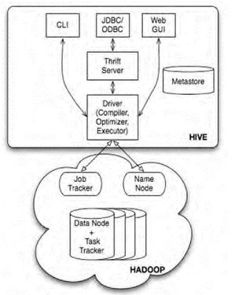
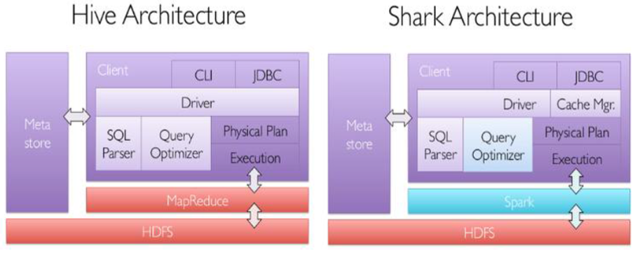
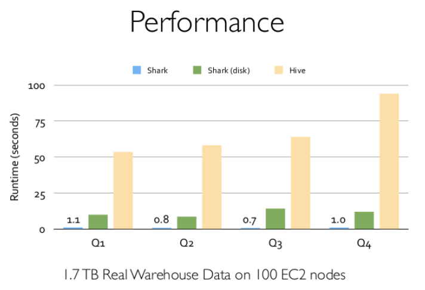
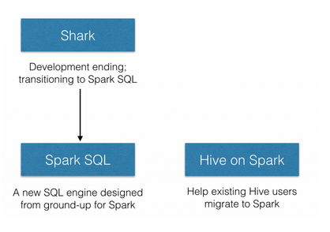

SparkSQL的发展历程
HDFS -> Hive
由于Hadoop在企业生产中的大量使用，HDFS上积累了大量数据，为了给熟悉RDBMS但又不理解MMapReduce的技术人员提供快速上手的工具，Hive应运而生。Hive的原理是将SQL语句翻译成MapReduce计算。

Hive -> Shark
但是，MapReduce计算过程中大量的中间磁盘落地过程消耗了大量的I/O，降低了运行效率，为了提供SQL-on-Hadoop的效率，Shark出现了。

Shark是伯克利AMPLab实验室Spark生态环境的组件之一，它修改了Hive中的内存管理、物理计划和执行三个模块，使得SQL语句直接运行在Spark上，从而使得SQL查询的速度得到10-100倍的提升。

Shark之死
2014年6月1日，Shark项目和SparkSQL项目的主持人Reynold Xin宣布：停止对Shark的开发，团队将所有资源放sparkSQL项目上，至此，Shark的发展画上了句话。Reynold在其微博上发出了下面这段话：
为什么Shark会死呢？Databricks在其官网上给出了答案
Shark built on the Hive codebase and achieved performance improvements by swapping out the physical execution engine part of Hive. While this approach enabled Shark users to speed up their Hive queries, Shark inherited a large, complicated code base from Hive that made it hard to optimize and maintain. As we moved to push the boundary of performance optimizations and integrating sophisticated analytics with SQL, we were constrained by the legacy that was designed for MapReduce.
随着Spark的发展，Shark对于Hive的太多依赖制约了Spark的One Stack rule them all的方针，制约了Spark各个组件的相互集成，同时Shark也无法利用Spark的特性进行深度优化，所以决定放弃Shark，提出了SparkSQL项目。

随着Shark的结束，两个新的项目应运而生：SparkSQL和Hive on Spark。其中SparkSQL作为Spark生态的一员继续发展，而不再受限于Hive，只是兼容Hive；而Hive on Spark是一个Hive的发展计划，该计划将Spark作为Hive的底层引擎之一，也就是说，Hive将不再受限于一个引擎，可以采用Map-Reduce、Tez、Spark等引擎。
Shark -> SparkSQL
SparkSQL无论在数据兼容、性能优化、组件扩展方面都得到了极大的方便，真可谓“退一步， 海阔天空”。
- 数据兼容方面 不但兼容hive，还可以从RDD、parquet文件、JSON文件中获取数据，未来版本甚至支持获取RDBMS数据以及cassandra等NOSQL数据
- 性能优化方面 除了采取In-Memory Columnar Storage、byte-code generation等优化技术外、将会引进Cost Model对查询进行动态评估、获取最佳物理计划等等
- 组件扩展方面 无论是SQL的语法解析器、分析器还是优化器都可以重新定义，进行扩展